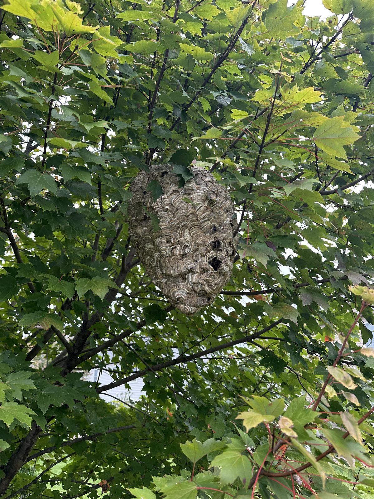
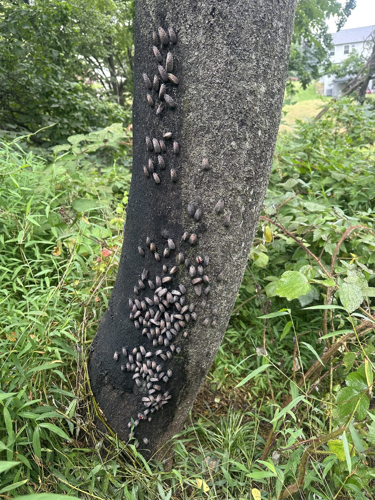

Residential pest control and exterminator services in Hershey and Derry Township — ants, spiders, yellow jackets, hornets, carpenter bees, cluster flies, and seasonal prevention. Same-day emergency response for active stinging nests.
Free Estimate — Call or Text 717-379-3248The pest mix in Hershey reflects the neighborhood. Estate lots in Derry Township get wildlife-adjacent issues: carpenter ants in the eaves, yellow jackets in ground voids near patio stone work, cluster flies that overwinter in sun-warmed south walls, and carpenter bees in cedar fascia. Newer subdivisions off Sand Beach and Bullfrog Valley get the standard ant/spider/wasp pressure plus the chronic odorous house ants that come from new-construction soil disturbance.
Properties along the Hersheypark perimeter and Spring Creek also deal with more pressure from the woodline year-round — carpenter ants moving in from rotting limbs, yellow jackets in stone walls, and ground-nesting hornets near deck stonework. Different from open-lot pest pressure two miles away.


Odorous house ants, carpenter ants, pavement ants, and the occasional acrobat ant. We identify the species first — different ants need different products and different bait strategies. If ants are already coming indoors, expect a few treatments to get control rather than one; the colony is outside and it takes repeat contact. See pest control, not extermination. Carpenter ant activity in mature Derry Township homes often indicates a moisture issue we'll flag.
Ground-nesting yellow jackets in patios and stone walls, bald-faced hornets in shrubs and soffits, European hornets in tree cavities. Same-day response for active nests with kids or pets nearby. Dedicated yellow jacket service page.
Web removal plus targeted treatment around foundation, eaves, and outbuildings. Brown recluse is rare in Central PA but we identify and handle if found.
The chronic spring problem for Hershey cedar fascia, deck railings, and unpainted soffits. Treatment targets the galleries; long-term fix involves repainting or repairing.
A monthly perimeter program for households that want pests handled before they show up indoors (every other month and quarterly also available) — first-floor windows and doors, plus three feet up the wall and three feet out from the foundation all the way round the house, every month. Every other visit also gets a granular application through the mulch and rock beds, where ants and other crawling insects harbour. This is how most of our customers are set up, and it is especially useful on Hershey estate lots with multiple outbuildings.
Estate lots on Park Avenue, Areba Avenue, Cocoa Avenue, and the streets around the Hershey Medical Center. Subdivisions off Sand Beach Road, Bullfrog Valley Road, and Trinidad Avenue. Properties along Spring Creek and the Swatara. Derry Township proper (17033). Adjacent Hummelstown, Palmyra, and South Hanover Township properties.
Locally owned. Licensed and insured. Same-day emergency response for stinging insects. Serving Hershey, Hummelstown, Palmyra, Derry Township, and South Hanover Township.
Call or Text 717-379-3248